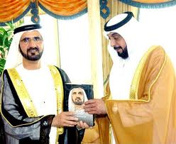

My Vision - Challenges in the Race for Excellence
Home | About the Book | Photo Gallery

A new book by UAE Vice President and Prime Minister and Ruler of Dubai His Highness Sheikh Mohammed bin Rashid Al Maktoum, offers a detailed account of the vision that transformed Dubai and the UAE into international hubs for commerce and finance.
Described by reviewers as one of the most important books published in the Middle East in the past 50 years, the book is primarily about development, as four of the five sections carry the word development in their titles.
In his book, the author reveals, for the first time, the secrets that made the emirate of Dubai one of the most astounding development phenomena in the world. The book is dedicated to UAE President His Highness Sheikh Khalifa bin Zayed Al Nahyan. Sheikh Mohammed bin Rashid Al Maktoum presented Sheikh Khalifa with the first copy of his new book.
Other Publications
Copyright © 2021, Mohamed Zafar H00649145. FJF- HCT